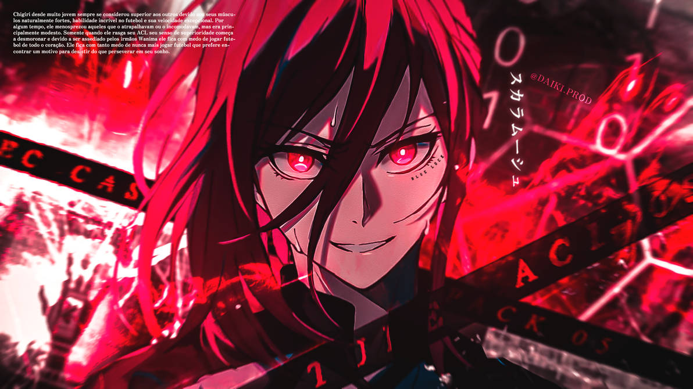
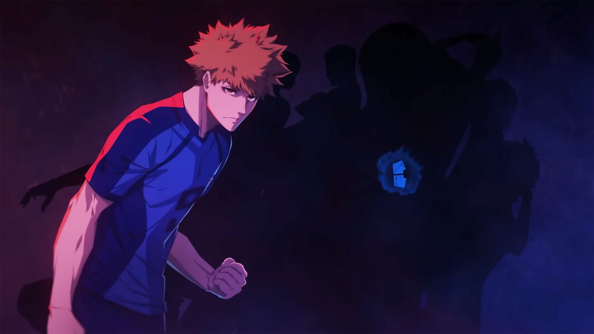
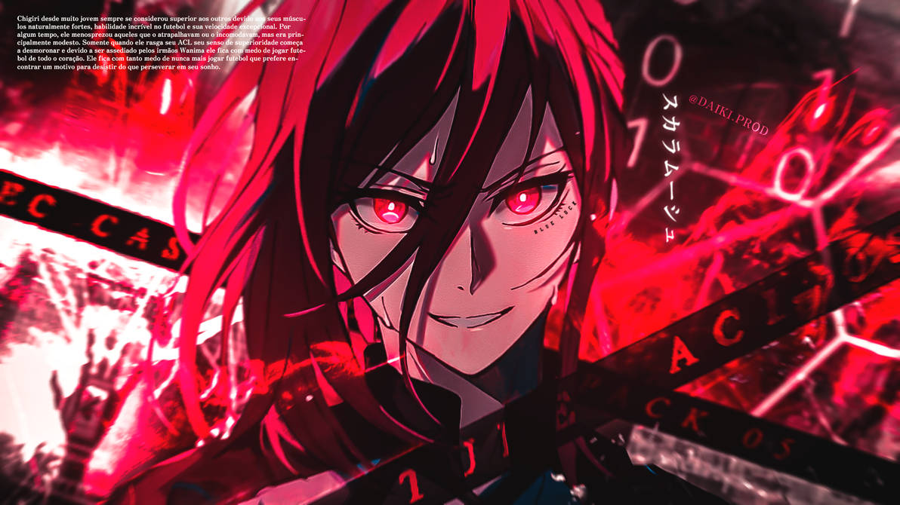
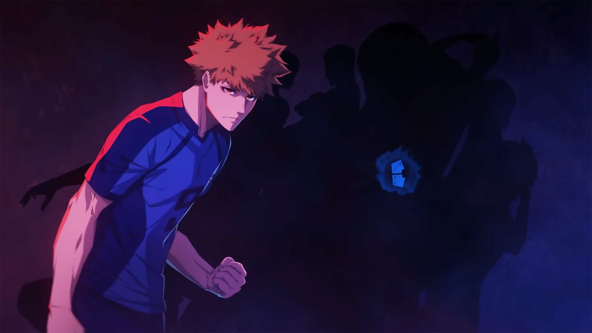

Yoichi Isagi
Isagi é um estudante do segundo ano do ensino médio, que já jogou como atacante do time de futebol da Ichinan High School. Quando ele chegou às instalações do Blue Lock , ele se tornou um membro do Time Z para a Primeira Seleção . Seu principal objetivo é se tornar o melhor atacante do mundo.
Meguro Bachira
Bachira é um atacante caprichoso que joga seguindo seus instintos. Ele era um membro do Time Z durante a Primeira Seleção. Seu principal objetivo era encontrar rivais no futebol que também tivessem um "monstro" dentro de si, mas seu objetivo depois muda para se tornar o melhor atacante do mundo.
Hyoma Chigiri
Hyoma Chigiri é um dos atacantes mais promissores do Japão e vem de um clube de futebol prestigiado. Ele é conhecido por sua incrível velocidade e agilidade em campo, combinadas com sua capacidade de fazer ataques bem sincronizados e estratégicos.
Rensuke Kunigami
Rensuke Kunigami também é conhecido por sua personalidade calma e tranquila. Ele muitas vezes serve como uma voz da razão para seus companheiros de equipe e é habilidoso em analisar as estratégias e fraquezas dos oponentes.
Seishiro Nagi
Como um tipo sensorial e perceptivo, Seishiro é conhecido por sua capacidade de se adaptar a diferentes situações e ambientes. Ele é impulsivo e costuma correr riscos sem medo de falha. Ele está sempre em busca de novas experiências e desafios, o que o ajuda a desenvolver suas habilidades e conhecimentos.